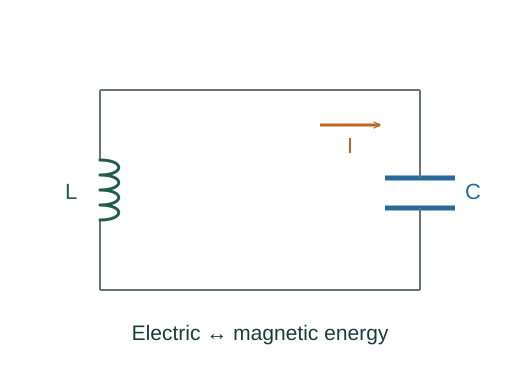

Derive LC oscillation frequency
An ideal LC circuit exchanges energy between a capacitor’s electric field and an inductor’s magnetic field. Its charge obeys the same harmonic equation as a mass on a spring.
What the symbols mean
q: signed charge on a chosen capacitor plate; I = dq/dt under the chosen reference; L: inductance; C: capacitance.
When this applies
Ideal closed LC circuit, no resistance or radiation loss, constant L and C, no external driving after the initial energy is supplied.
Developing the argument

Write the loop equation
With consistent passive element signs, the capacitor and inductor voltage terms sum to zero.
Replace current with a charge rate
Differentiate q to obtain current, and differentiate again for the inductor term.
Compare with harmonic motion
The coefficient of q is ω₀². Therefore q = Qmax cos(ω₀t + φ) solves the ideal circuit equation.
A closer lookWhy does this equation have a sinusoidal solution? ↗Derive simple harmonic motion from a springCheck energy exchange
When capacitor charge is largest current is zero, and vice versa. The sum of the two stored energies is constant.
A worked example
For L = 0.10 H and C = 10 μF, ω₀ = 1000 rad/s and f ≈ 159 Hz.
Derivation behind this calculation ↗A point to keep straight
The current and charge are a quarter cycle out of phase. Real circuits damp unless driven because they dissipate energy.
Check the assumptions and derivation ↗